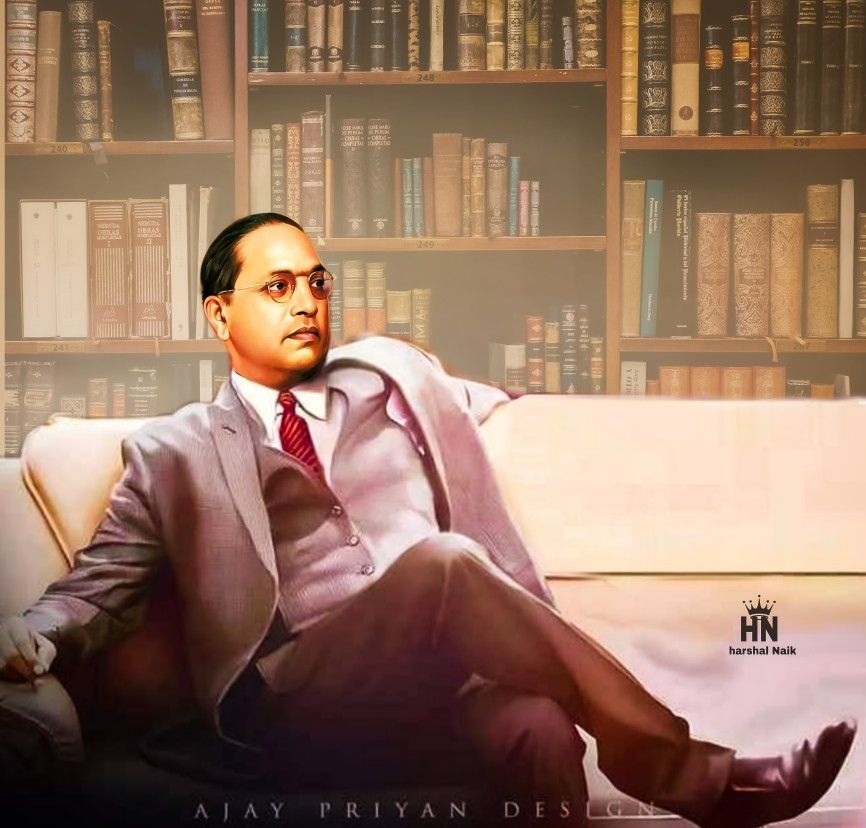

B.R.Ambedkar
Indian jurist, economist, social reformer and political leader
(14th April 1891 – 6th December 1956)
"Religion of the Buddha gives freedom of thoughts and freedom of self development to all"
Dr.Babasaheb Ambedkar
Indian polymath,the architect of the Indian Constitution,and revivalist of Buddhism in India
Ambedkar graduated from Elphinstone College, University of Bombay, and studied economics at Columbia University and the London School of Economics, receiving doctorates in 1927 and 1923 respectively and was among a handful of Indian students to have done so at either institution in the 1920s.[13] He also trained in the law at Gray's Inn, London. In his early career, he was an economist, professor, and lawyer. His later life was marked by his political activities; he became involved in campaigning and negotiations for India's independence, publishing journals, advocating political rights and social freedom for Dalits, and contributing significantly to the establishment of the state of India. In 1956, he converted to Buddhism, initiating mass conversions of Dalits.
He wrote three scholarly books on economics:
- Administration and Finance of the East India Company
- The Evolution of Provincial Finance in British India
- The Problem of the Rupee: Its Origin and Its Solution
Top 10 Facts You Did Not Know About Dr. B. R. Ambedkar :
- Ambedkar played a key role in establishment of Reserve Bank of India in 1935.
- In 1951, Dr. Ambedkar founded "The Bhartiya Buddha Jansangh".
- He had suggested the division of both Madhya Pradesh and Bihar for better governance wayback in 1955.
- He wanted to sponsor Sanskrit as the official language of the Indian union.
- His autobiography 'Waiting for a Visa' is used as a text book in the Columbia University.
- He was opposed to the whole idea of reservation of jobs and constituencies and didn't want the reservation system to exist at all.
- He was the first Indian to complete a doctorate degree overseas.
- Ambedkar was the one who insisted on having the working hours reduced from fourteen to eight hours in a day.
- He strongly opposed Artical 370 of the Indian constitution which gives special status to the state of Jammu & Kashmir.
- he played a key role in forming the National Employment Exchange Agency in India.